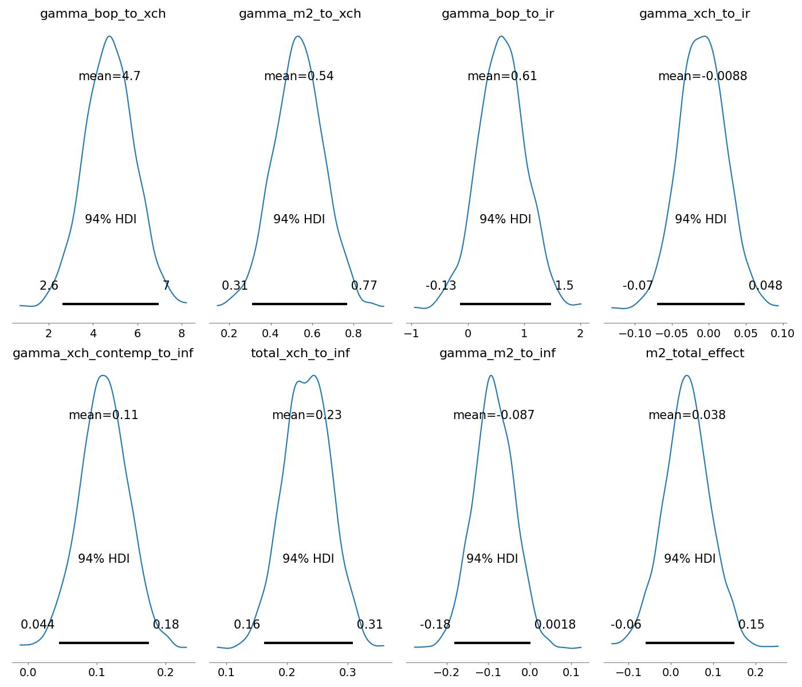

Çok ticari açık veren, dışa bağımlı, sürekli kriz yaşayan ve hiperenflasyon problemi yaşayan ülkelerdeki makroekonomik değişkenler arasındaki ilişki nedir? Daha önemlisi değişkenler arasında ne tür bir sebep - sonuç ilişkisi vardır, yani hangi parametredeki değişim bir diğerinde değişime sebep olur (tam tersi doğru olmayabilir).
Klasik istatistik yöntemlerden Granger istatiği nedensellik (causal) sorularına cevap verebilir. Çok boyutlu zaman serileri için kendisiyle regresyon olan bir sistemi vektör otoregresyon (vector autoregression, VAR) ile analiz edebiliriz. Fakat her iki yaklaşımda da problemi bir şablona sokmak gerekecek.
Bayes, ve Olasılıksal Programlama teknikleri ile istediğimiz her türlü ilişkiyi ileri yönde kodlayıp, bilinmeyen değişkenleri bulmak için veri üzerinden simülasyon yapabiliriz. Bayes yaklaşımı bize bilinmeyen değişkenlere, onlara özel, bir dağılım tipi atamamızı sağlar, ve önsel dağılımlar ile parametrelerin arandığı uzayı daraltmak mümkündür.
Örnek olarak Arjantin’in verisini inceleyelim. Bir Para, Enflasyon, Kurlar ve Dağıtılmış Gecikmeler (Distributed Lags) modeli kuracağız: Bu modelde makroekonomik değişkenler arasındaki gecikmeli ve dolaylı nedensellik ilişkilerini incelemek amacıyla gecikmeli (lagged) bir Bayes VAR (BVAR) modeli kurulmuştur [3], ve seçili değişkenler arasındaki ilişki direk formüller ile yapılmıştır.
Analiz için seçilen değişkenler ödemeler dengesi (bop), döviz kuru değer kaybı (exch), enflasyon (inf) ve merkez bankası faiz oranı (ir). Veriler logaritmik farklar (\(\%\)), birinci derece farklar (\(\Delta\)) ve yüzde değişimler üzerinden durağanlaştırılmıştır.
Önsel Dağılımlar (Priors)
\[a_i \sim \mathcal{N}(\mu = 0, \sigma^2 = 5^2), \quad i \in \{\text{xch}, \text{ir}, \text{inf}\}\]
\[\sigma_i \sim \text{Half-Normal}(\sigma = 10), \quad i \in \{\text{xch}, \text{ir}, \text{inf}\}\]
\[\gamma_{\text{bop} \to \text{xch}} \sim \mathcal{N}(0, 2^2), \quad \gamma_{\text{m2} \to \text{xch}} \sim \mathcal{N}(0, 2^2)\]
\[\gamma_{\text{bop} \to \text{ir}} \sim \mathcal{N}(0, 2^2), \quad \gamma_{\text{xch} \to \text{ir}} \sim \mathcal{N}(0, 2^2)\]
\[\gamma_{\tt{xch\_lag} \to \text{inf}} \sim \mathcal{N}(0, 2^2), \quad \gamma_{\text{m2} \to \text{inf}} \sim \mathcal{N}(0, 2^2), \quad \gamma_{\text{ir} \to \text{inf}} \sim \mathcal{N}(0, 2^2)\]
\[\gamma_{\tt{xch\_contemp} \to \text{inf}} \sim \mathcal{N}(0, 2^2)\]
\[\beta_{\text{xch}} \sim \mathcal{N}(0, 1^2), \quad \beta_{\text{ir}} \sim \mathcal{N}(0, 1^2), \quad \beta_{\text{inf}} \sim \mathcal{N}(0, 1^2)\]
Olurluk Fonksiyonları
\[XCH_t \sim \mathcal{N}\left(a_{\text{xch}} + \gamma_{\text{bop} \to \text{xch}} BOP_{t-1} + \gamma_{\text{m2} \to \text{xch}} M2_{t-1} + \beta_{\text{xch}} XCH_{t-1}, \; \sigma^2_{\text{xch}}\right)\]
\[IR_t \sim \mathcal{N}\left(a_{\text{ir}} + \gamma_{\text{bop} \to \text{ir}} BOP_{t-1} + \gamma_{\text{xch} \to \text{ir}} XCH_{t-1} + \beta_{\text{ir}} IR_{t-1}, \; \sigma^2_{\text{ir}}\right)\]
\[\text{Inf}_t \sim \mathcal{N}\left(a_{\text{inf}} + \gamma_{\tt{xch\_contemp} \to \text{inf}} XCH_t + \gamma_{\tt{xch\_lag} \to \text{inf}} XCH_{t-1} + \gamma_{\text{m2} \to \text{inf}} M2_{t-1} + \gamma_{\text{ir} \to \text{inf}} IR_{t-1} + \beta_{\text{inf}} \text{Inf}_{t-1}, \; \sigma^2_{\text{inf}}\right)\]
Kümülatif ve Dolaylı Etkiler
\[\Gamma_{\text{xch} \to \text{inf}} = \gamma_{\tt{xch\_contemp} \to \text{inf}} + \gamma_{\tt{xch\_lag} \to \text{inf}}\]
\[\tt{m2\_indirect\_effect} = \gamma_{\text{m2} \to \text{xch}} \times \Gamma_{\text{xch} \to \text{inf}}\]
\[\tt{m2\_total\_effect} = \tt{m2\_indirect\_effect} + \gamma_{\text{m2} \to \text{inf}}\]
Birleşik Sonsal Dağılım
\[p(\Theta \mid Y) \propto \left[ \prod_{t=2}^{T} p(XCH_t \mid Y_{t-1}, \Theta) \cdot p(IR_t \mid Y_{t-1}, \Theta) \cdot p(\text{Inf}_t \mid XCH_t, Y_{t-1}, \Theta) \right] \cdot p(a) \, p(\gamma) \, p(\beta) \, p(\sigma)\]
Not: DAG yapısı gereği her bir yapısal denklem kendi koşullu ebeveynleri verildiğinde bağımsız hata terimlerine (\(\epsilon_{i,t}\)) sahip olduğundan, birleşik olurluk fonksiyonu tek değişkenli Normal olurlukların çarpımı şeklinde ayrışır.
Veriyi baştan hazırlamak için data.py kodu
işletilebilir. Veri hazırsa, alttaki kod analizi yapar.
import pandas as pd
import pymc as pm
import arviz as az
df_clean = pd.read_csv('arg_quarterly_final.csv', index_col=0, parse_dates=True)
# Lags alignment (1-lag for quarterly structural dynamics)
max_lag = 1
N = len(df_clean) - max_lag
# Dependent variables at time t (t = max_lag .. T-1)
xch_t = df_clean['xch_diff'].values[max_lag:]
ir_t = df_clean['ir_diff'].values[max_lag:]
inf_t = df_clean['inf_diff'].values[max_lag:]
# Contemporaneous exchange rate at time t
xch_contemp = df_clean['xch_diff'].values[max_lag:]
# Lags at time t-1
m2_lag1 = df_clean['m2_diff'].shift(1).values[max_lag:]
bop_lag1 = df_clean['bop_diff'].shift(1).values[max_lag:]
xch_lag1 = df_clean['xch_diff'].shift(1).values[max_lag:]
inf_lag1 = df_clean['inf_diff'].shift(1).values[max_lag:]
ir_lag1 = df_clean['ir_diff'].shift(1).values[max_lag:]
with pm.Model() as model:
# Intercepts & Standard Deviations
a_xch = pm.Normal("a_xch", mu=0, sigma=5)
a_ir = pm.Normal("a_ir", mu=0, sigma=5)
a_inf = pm.Normal("a_inf", mu=0, sigma=5)
sigma_xch = pm.HalfNormal("sigma_xch", sigma=10)
sigma_ir = pm.HalfNormal("sigma_ir", sigma=10)
sigma_inf = pm.HalfNormal("sigma_inf", sigma=10)
# Coefficients: Exchange Rate Equation
gamma_bop_to_xch = pm.Normal("gamma_bop_to_xch", mu=0, sigma=2)
gamma_m2_to_xch = pm.Normal("gamma_m2_to_xch", mu=0, sigma=2)
beta_xch = pm.Normal("beta_xch", mu=0, sigma=1)
# Coefficients: Interest Rate Equation
gamma_bop_to_ir = pm.Normal("gamma_bop_to_ir", mu=0, sigma=2)
gamma_xch_to_ir = pm.Normal("gamma_xch_to_ir", mu=0, sigma=2)
beta_ir = pm.Normal("beta_ir", mu=0, sigma=1)
# Coefficients: Inflation Equation (Contemporaneous xch_t + Lagged dynamics)
gamma_xch_contemp_to_inf = pm.Normal("gamma_xch_contemp_to_inf", mu=0, sigma=2)
gamma_xch_lag_to_inf = pm.Normal("gamma_xch_lag_to_inf", mu=0, sigma=2)
gamma_m2_to_inf = pm.Normal("gamma_m2_to_inf", mu=0, sigma=2)
gamma_ir_to_inf = pm.Normal("gamma_ir_to_inf", mu=0, sigma=2)
beta_inf = pm.Normal("beta_inf", mu=0, sigma=1)
# Equations
mu_xch = a_xch + gamma_bop_to_xch * bop_lag1 + gamma_m2_to_xch * m2_lag1 + beta_xch * xch_lag1
obs_xch = pm.Normal("obs_xch", mu=mu_xch, sigma=sigma_xch, observed=xch_t)
mu_ir = a_ir + gamma_bop_to_ir * bop_lag1 + gamma_xch_to_ir * xch_lag1 + beta_ir * ir_lag1
obs_ir = pm.Normal("obs_ir", mu=mu_ir, sigma=sigma_ir, observed=ir_t)
# INF equation uses CONTEMPORANEOUS xch_t + Lagged XCH
mu_inf = (a_inf
+ gamma_xch_contemp_to_inf * xch_contemp
+ gamma_xch_lag_to_inf * xch_lag1
+ gamma_m2_to_inf * m2_lag1
+ gamma_ir_to_inf * ir_lag1
+ beta_inf * inf_lag1)
obs_inf = pm.Normal("obs_inf", mu=mu_inf, sigma=sigma_inf, observed=inf_t)
# Aggregated Deterministics
total_xch_to_inf = pm.Deterministic("total_xch_to_inf", gamma_xch_contemp_to_inf + gamma_xch_lag_to_inf)
m2_indirect_effect = pm.Deterministic("m2_indirect_effect", gamma_m2_to_xch * total_xch_to_inf)
m2_total_effect = pm.Deterministic("m2_total_effect", m2_indirect_effect + gamma_m2_to_inf)
# Sampling
trace = pm.sample(
draws=1000,
tune=1000,
chains=2,
target_accept=0.9,
return_inferencedata=True,
progressbar=False
)
az.plot_posterior(
trace,
var_names=[
"gamma_bop_to_xch",
"gamma_m2_to_xch",
"gamma_bop_to_ir",
"gamma_xch_to_ir",
"gamma_xch_contemp_to_inf",
"total_xch_to_inf",
"gamma_m2_to_inf",
"m2_total_effect"
],
figsize=(14, 12)
)
plt.tight_layout()
plt.savefig('dag_results.jpg')
Arjantin Ekonomisi Hakkında Ana Bulgular
Bilindiği gibi Arjantin zaman zaman hiperinflasyona yakalanan, ciddi dış ticaret açıkları veren bir ülkedir. Analizden elde edilen bazı sonuçlar alttadır,
Döviz Kuru (xch) Enflasyonu Yönlendiriyor: Döviz kuru değer
kaybının enflasyon üzerindeki toplam etkisi
(total_xch_to_inf) güçlü bir pozitif etki göstermektedir;
posterior ortalama \(0.23\) (%94 HDI:
\([0.16, 0.31]\)).
Eşzamanlı ve Gecikmeli Geçişkenlik: Eşzamanlı etki
(gamma_xch_contemp_to_inf) bu etkinin neredeyse yarısını
oluşturmaktadır; posterior ortalama \(0.11\) (%94 HDI: \([0.044, 0.18]\)), bu da döviz kuru
şoklarının aynı çeyrek içinde hızla enflasyona yansıdığını
göstermektedir.
Ödemeler Dengesi (BOP) Dinamikleri: Ödemeler dengesi şokları,
döviz kuru değişimleri üzerinde büyük bir pozitif etki
(gamma_bop_to_xch ortalama \(=
4.7\), %94 HDI: \([2.6, 7.0]\))
ve faiz oranı değişimleri üzerinde de bir etki
(gamma_bop_to_ir ortalama \(=
0.61\), %94 HDI: \([-0.13,
1.5]\)) göstermektedir.
Faiz Oranı Duyarlılığı: Döviz kuru değişimleri, faiz oranları
üzerinde neredeyse hiç doğrudan gecikmeli etki göstermemektedir
(gamma_xch_to_ir ortalama \(=
-0.0088\), %94 HDI: \([-0.07,
0.048]\)), bu da %94 HDI’nin sıfırı sıkı bir şekilde kapsadığını
göstermektedir.
Ödemeler Dengesi (bop) Etkileri:
Döviz Kuru (xch) Üzerinde: Pozitif ve güçlü doğrudan
etki (gamma_bop_to_xch \(=
4.7\)), yapısal modelde döviz kuru hareketlerinin başlıca itici
gücü olarak işlev görmektedir.
Faiz Oranı (ir) Üzerinde: Ilımlı pozitif doğrudan
etki (gamma_bop_to_ir \(=
0.61\)), ancak %94 HDI’si sıfırı içermektedir, bu da daha yüksek
parametre belirsizliğini yansıtmaktadır.
Parasal Taban M2 (m2) Etkileri:
Döviz Kuru (xch) Üzerinde: Pozitif doğrudan etki
(gamma_m2_to_xch \(=
0.54\), %94 HDI: \([0.31,
0.77]\)), M2 genişlemesinin para birimi değer kaybına katkıda
bulunduğunu göstermektedir.
Enflasyon (inf Doğrudan) Üzerinde: Zayıf ile hafif
negatif arasında doğrudan etki (gamma_m2_to_inf \(= -0.087\), %94 HDI: \([-0.18, 0.0018]\)).
Enflasyon (inf Toplam) Üzerinde: Doğrudan etki ile
döviz kuru değer kaybı yoluyla dolaylı yolu
(gamma_m2_to_xch \(\times\) total_xch_to_inf)
birleştiren hesaplanmış toplam etki (m2_total_effect),
sıfıra yakın bir posterior ortalama vermektedir (0.038, %94 HDI: \([-0.06, 0.15]\)). Bu, M2’nin bu modelde
enflasyona giden başlıca aktarım kanalının döviz kuru değer kaybı
yoluyla dolaylı olarak gerçekleştiğini göstermektedir.
Döviz Kuru Değer Kaybı (xch) Etkileri:
Enflasyon (inf) Üzerinde: Fiyat düzeyi
değişimlerinin başlıca aktarıcısı olarak işlev görmektedir. Enflasyonu
hem eşzamanlı olarak (gamma_xch_contemp_to_inf \(= 0.11\)) hem de zaman içinde kümülatif
olarak (total_xch_to_inf \(=
0.23\)) doğrudan artırmaktadır.
Faiz Oranı (ir) Üzerinde: Anlamlı bir doğrudan etki
göstermemektedir (gamma_xch_to_ir \(= -0.0088\)), posterior yoğunluk sıfırın
etrafında sıkı bir şekilde yoğunlaşmıştır.
Not: Verinin işlenişi hakkında bir ek, data.py içine
bakılırsa orada enflasyon verisinin senelik bazda
arg_inf.csv dosyasından alındığı görülecektir. Bunun sebebi
FRED’den gelen verinin yeterince geriye gitmemesiydi. Ayrıca eldeki
diğer veriler aylık bazda olduğu için dış enflasyonu kullanmak için
aradeğerleme (interpolation) gerekliydi. Bu aradeğerlemeyi lineer değil
kupsel (cubiç) yaptık, analiz ancak bu şekilde görülen değerleri
veriyor. Ayrıca tarih detay skalası / öğe boyu (granularity) ceyrek
(quarter) olarak seçildi.
Değişkenlerin kendisi ve diğerleri arasında geriye doğru bakan bir analizi eğer genel bir şekilde (her değişkenin her diğer değişken ile) yaklaşmak istesek bunu klasik BVAR yaklaşımı ile yapabilirdik [6]. Bu yaklaşım kendisiyle korelasyon durumunu matrisler ile analiz eder, ve nihai hesap standart regresyon ile çözülür.
import pandas as pd
import lesage
df = pd.read_csv('arg_quarterly_final.csv', index_col=0, parse_dates=True)
var_names = ['xch_diff', 'ir_diff', 'inf_diff', 'm2_diff', 'bop_diff']
df_macro = df[var_names].dropna()
y = df_macro.values
nlag = 2
tight = 0.3 # Overall tightness
weight = 0.5 # Cross-variable tightness
decay = 1.0 # Lag decay
results = lesage.bvar(y, nlag=nlag, tight=tight, weight=weight, decay=decay, vnames=var_names)
lesage.write_results(results,"bvar1.txt")Sonuçlar bvar1.txt içinde.
Bir liranın günlük hayat içinde dolaşımını düşünelim. Ben gidiyorum mesela köşe başındaki satıcıdan bir poğaça alıyorum. Bu satıcı lirayı kızına veriyor, kızı da onu lunaparkta ata binmek için kullanıyor. Atı kiralayan Ali lirayı eve götürüyor, bir süre koltuk altında kaybediyor, tekrar buluyor, sonra onu kahve almak için kullanıyor. Bütün bir sene içinde bu lira üç kere harcanmış oluyor.
PMT’yi anlamak için bu kavramlar yeterli aslında. 1 lira para, \(M\) ile gösteriyoruz, o paranın bir senede kaç kere kullanıldığı para hızı, onu \(V\) ile gösteriyoruz ki üstteki örnekte \(V=3\). Poğaça, ata binmek, kahve ekonomideki gerçek ürünler ve servisler, onlara \(Y\) diyelim, ve ürün / servislerin fiyatı ise \(P\) oluyor. PMT için gerekli değişkenler bunlar.
Tüm ekonomi bazında düşünürsek, \(M\) para arzı (money supply) yani ekonomideki tüm para miktarı (üstteki örneklerde m2 ile gösterilen). \(V\) ürün ve servis almak için bir liranın kaç kez kullanıldığı; bazıları parayı yastığın altına koyar onların parası “yavaştır’’, kimisi habire alışveriştedir, onların parası hızlıdır. Hız tüm paraların hız averajı üzerinden hesaplanıyor tabii. \(P\) tüm ürün ve servislerin (yine ortalama) fiyat seviyesi. Son olarak \(Y\), ekonomide satılan tüm ürün ve servislerin miktarı, yani Gayrisafi Yurtiçi Hasıla, GSYH (İngilizce GDP). Onun fiyat seviyesi ile çarpılmış hali Reel GSYH (Nominal GDP), bu ekonominin ürettiği ürünlerin tüm lira bazında toplamı. Formülün bir tarafı bu.
Formülün diğer tarafı \(M\) çarpı \(V\); ekonomideki tüm para miktarını o paranın ekonomi içinde senede kaç kez döndüğü ile çarparsak bu bize, aynı şekilde, reel GSYH’yı vermez mi? Para senede kaç kez bir ürün için birisine verilmiş ise, bu ekonomide o kadar satış yapılmış demektir. Böylece formülün iki tarafını elde etmiş olduk.
Bu formüle bir teori bile denemez, gayet bariz bir eşitlik (identity). Formüle bir diğer bakış açısı şöyle, eldeki tüm para çarpı o paranın kaç kez harcandığı ekonomideki tüm alıcıların yaptıklarını kapsar, satılan her şey çarpı o şeylerin fiyatı ekonomideki tüm satıcıların yaptıklarını kapsar. Satılan her şey tanım itibariyle alınmış olduğuna göre
\[ M \cdot V = P \cdot Y \tag{1} \]
doğru olmalıdır. Tabii üstteki formüldeki değişkenlerin nasıl ölçülmesi gerektiğiyle ilgili tartışmalar var, burada farklı yaklaşımlar olabilir. Mesela kredi kartları para olarak \(M\) içinde sayılsın mı sayılmasın mı?
Bu tür farklılıklar bir tarafa, üstteki formül bir eşitlik olarak, ekonomi hakkındaki fikirlerimizi organize etmesi açısından çok faydalı. Mesela enflasyon (\(P\)’nin yükselmesi) sebebi nedir sorusunu formül üzerinden cevaplayabiliriz.
Enflasyon
PMT formülünde iki tarafı \(M\)’ye bölelim,
\[ \frac{MV}{Y} = P\]
Bu denklem bize diyor ki eğer fiyatlar değişiyorsa bunun üç farklı sebebi olabilir. \(M\) değişiyor, \(V\) değişiyor, ya da \(Y\) değişiyor. Unutmayalım fiyatlar yani \(P\) (efendim domates ne kadar, pantolon, manto, ekmek fiyatları vs) kısa sürede oldukca hızlı değisebilir, mesela bir sene içinde fiyatların ikiye, üçe katlandığı görülmüştür. Fakat genel ekonomik açısından biz biliyoruz ki \(V,Y\) oldukca sabittir. \(Y\), yani GSYH, bir sene içinde çok, çok fazla değişmez. Bir sene içinde yüzde 10’lük çıkış muazzam bir büyüme kabul edilir, nadir meydana gelir, ama ikiye, üçe katlanma neredeyse hiç olmaz. Fiyatlardaki aşırı değişimi ekonomideki aşırı büyüme ile açıklayamayız [2].
Peki paranın dolanım hızı \(V\)? Bu değişken 1 liranın bir sene içinde ekonomide ortalama kaç alım yaptığını gösterir, ABD ekonomisinde bu sayı aşağı yukarı 7 seviyesindedir. Hızı belirleyen maaşların ne sıklıkla ödendiği, haftalık mı, aylık mı mesela, ya da bir borç senetinin, çekin tahsil edilmesinin ne kadar zaman aldığı (ülkenin banka yapısı, bürokrasisi ile alakalı) gibi faktörlerdir. Bunlar da yavaş değisen faktörler, bu sebeple hız \(V\) artabilir, ya da azalabilir, ama bu ABD örneğinde 8 seviyesine çıkış ya da 6 seviyesine iniş ölçüsünde olur. O zaman \(P\)’deki çok büyük değişimi \(V\) ile de açıklayamayız.
Geriye ne kaldı? \(M\) kaldı. Yani fiyatlardaki çıkış para arzındaki çıkışla alakalıdır. Eğer bir ekonomide aynı miktardaki ürün ve servisin peşinde olan para seviyesi artarsa, fiyatların yukarı çıkması gerekir. Herkesin cebinde 100 lira olabilir, ve kahve 1 lira, sinema fiyatı 3 lira olabilir, ama herkesin cebindeki para ikiye katlansa, ama daha fazla kahve daha fazla sinema salonu açılmasa, kahve 2 lira, sinema 6 lira olacaktır.
Devletler Niye Enflasyon Yaratır
Enflasyon para arzının artmasıyla ortaya çıkar, ve aslında bir tür vergidir, çünkü zenginliği bir anlamda halktan devlete aktarır çünkü devlet para basıp bu parayı, yeni arzı piyasada mal almak için kullanıyorsa devlet istediğini alır, ama uzun vadede herkesin cebindeki paranın değeri düşer, yani para basamayan halk kaybetmiş olur. Bu tür “enflasyonist verginin’’ aslında pek iyi işleyen bir yöntem olduğu söylenemez, o sebeple devletler bu yöntemi ellerinde başka bir çare kalmadığında kullanırlar [4].
Ama yöntemin uzun vadedeki negatif tarafından önce kısa vadede olana yakından bakalım. Aslında kısa vadede artan para arzı üretim \(Y\)’de artmaya sebep olabilir. Ufak bir ekonomi düşünelim, fırıncı, terzi, ve marangoz olsun. Diyelim devlet vergiden alacağı parayı kullanmak yerine, yeni para basıyor ve bu parayı askerlere maaş olarak veriyor. Askerler alışverişe çıktıklarında, giysi, ekmek ve aldıklarında ilk başta mesela fırıncı çok mutlu olur, ekmeğini satacak yeni talep ortaya çıkmıştır. Fırıncı yeni talebi karşılamak için daha uzun saatler çalışır, daha fazla eleman ise alır, talep artınca fiyatları da arttırabilir. Fırıncı “oh ne güzel, artan ekmek fiyatları ve satışı sayesinde kazandığım ek para ile daha fazla giysi ve sandalye alabilirim’’. Fakat askerler marangozdan, ve terziden de aynı alışveriş yapmaktadırlar, onların da fiyatları artmaktadır. Fırıncı yeni parasıyla pantolon almak için terziye gittiğinde neredeyse kazandığı ek para kadar fiyatların artmış olduğunu görür, yani alım gücü aynı kalmıştır. Parasının değeri düşmüştür.
Fakat devletin işi de bozulacaktır, çünkü onlar için de fiyatlar artmıştır, para basıp aynı malları aldırmak istediğinde yeni fiyatlarla aynı alım için daha fazla para basmak zorundadır. Basarsa bu hikaye aynı şekilde devam eder, para değerini kaybetmeyi sürdürür, ayrıca bir süre sonra esnaf uyanır, fiyat artışını öngörmeye başlarlar / olacağını bilirler, ve artık “yeni talebi’’ tatmin etmek için daha fazla üretmezler.
Kısa ve uzun vade ile kasettiğimiz budur. Para arzını arttırmak başta üretimi arttırabilir, ama devletler bu numarayı istismar edebilirler, mesela Zimbabve’de seçim kazanmak için Mugabe’nin yaptığı gibi, ve sonuçlar her zaman kötü biter. Çünkü kısa vadede üretim artışı ardından esas artış fiyatlara yansır ve üretim aynı seviyeye düşer, diğer yandan eğer devlet enflasyonu çok yukarıdan azaltmak istiyorsa para arzında daralma yaratması gerekince ilk başta üretimde düşüş olacaktır, ki bu ekonomik durulma, hatta kriz demektir, ta ki arzdaki daralma fiyatlara yansıyıncaya kadar. Yani enflasyonist numara başta işe biraz yarayabilir, ardından işe yaramamaya başlar, ve kriz kaçınilmaz hale gelir. Bu noktada enflasyonun azalması ekonomide yavaşlama, işsizlik artışına sebep olur.
Bu sebeple bazıları enflasyonu bir uyuşturucuya benzetir. İlk başta “uçurabilir’’ ama bünye alıştıkça aynı uçuşu sağlamak için daha ve daha fazla ilaç gerekir, öyle ki bir süre sonra kişi normal olmak için bile ilaca ihtiyaç duyar, ve ardından ilaç kullanımı durdurulunca bir süre”yokluk krizi (withdrawal)’’ ile hasta şok yaşar, ardından acılı bir süreç sonrası normale dönülür. ABD’de 70’li yıllarda olan buydu, 70’ler boyunca enflasyon arttı, arttı, ama 70’ler sonunda artık işe yaramıyordu, işsizlik düşmüyordu. Bu noktada stagflasyon denen şey ortaya çıktı yani hem enflasyon hem işsizliğin aynı anda olduğu durum. 80’lı yıllar başında Reagan başkan olunca enflasyon düştü, ama bunun bedeli 81/82 yıllarındaki kriz oldu.
Para Nedir
Biraz önce devletin “para bastığından’’ bahsettik, para basılıp askerlere veriliyordu. Fakat [3]’e göre para arzının esas odağı aslında bankaların işyerlerine ve bazen özel kişilere verdiği kredidir çünkü banka borç verirken para basar.
Pek çok kişi bu bilgiden habersizdir. Bir şirket bankaya gidip borç istediğinde, borç verilirse banka hiç yoktan para yaratmaktadır, ve bu “yeni parayı’’ borç isteyene vermektedir. Bu tabii ki para arzında genişlemeye sebep olacaktır, ve (1) denklemi üzerinden ekonomi etkilenir. Bu sebeple arz hakkında her türlü hesap ekonomideki borç miktarını göz önüne almak zorundadır [3]. 2008 krizine kadar pek çok kişinin bilmediği bu durum yakın zamanda İngiliz ve Alman Merkez Bankaları tarafından kabul edildi. Evet bankalar hiç yoktan para yaratıyorlar. Yani bankaların”özel kişilerin mevduatını borç olarak verdiği’’ doğru değildir. Bankaların borç vermek mevduata ihtiyacı yoktur, parayı basar ve verir [5].
Kodlar
Kaynaklar
[1] Marginal Revolution University, Quantity Theory of Money, https://youtu.be/q59tZKP0HME
[2] Marginal Revolution University, Causes of Inflation, https://youtu.be/gi7jx5IJtik
[3] Koop, G., & Korobilis, D. (2010). Bayesian Multivariate Time Series Methods for Empirical Macroeconomics
[4] Marginal Revolution University, Why Governments Create Inflation, https://youtu.be/E6A_WpUY2LI
[5] Money as Debt, https://www.youtube.com/watch?v=2nBPN-MKefA
[6] LeSage, Econometrics Using Matlab